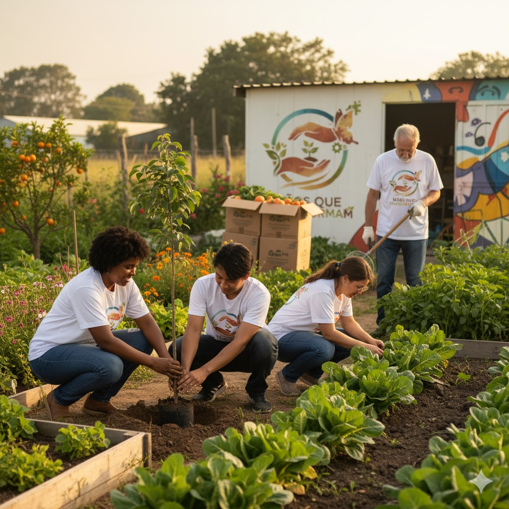
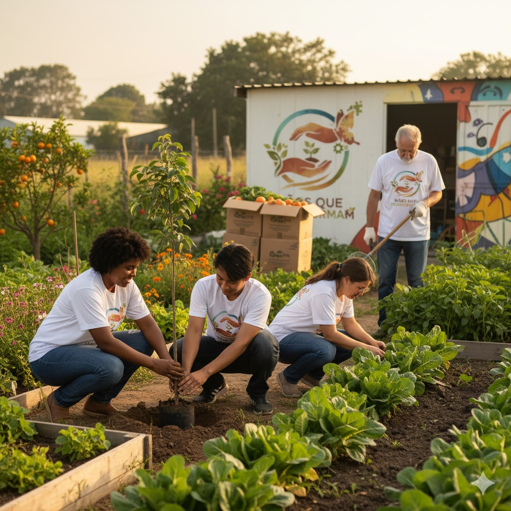

Projeto Alfabetização Cidadã
Foco na educação de jovens e adultos, oferecendo aulas noturnas e materiais gratuitos.
Foco na educação de jovens e adultos, oferecendo aulas noturnas e materiais gratuitos.
Capacitação em áreas como informática e culinária, visando a inserção no mercado de trabalho.
Sua ajuda é essencial! Descubra as oportunidades de voluntariado e junte-se à nossa causa.
Quero me Cadastrar para VoluntariadoAs doações garantem a continuidade dos nossos projetos. Qualquer valor faz a diferença.